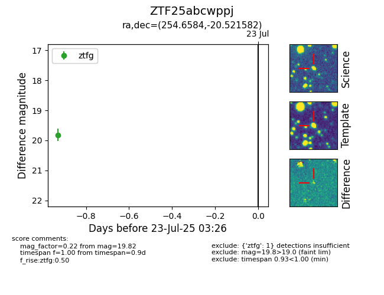

Target ZTF25abcwppj at 2025-07-23 12:37, see:
FINK: fink-portal.org/ZTF25abcwppj
Lasair: lasair-ztf.lsst.ac.uk/objects/ZTF25abcwppj
ALeRCE: alerce.online/object/ZTF25abcwppj
alt names
ZTF25abcwppj (ztf,fink)
coordinates:
equatorial (ra, dec) = (254.6584,-20.52158)
galactic (l, b) = (1.0291,+13.53503)
photometry
last ztfg=19.82
1 ztfg detections
